🎯 Hook – six hundred slits in a millimetre
Send white light through two slits and you get soft, overlapping fringes. Send the same light through a diffraction grating with 600 parallel slits every millimetre and the light is split into clean, separated spectra: a white central maximum, then a first-order spectrum on each side, then a second-order spectrum beyond it. Adding slits does not move the maxima — it sharpens them.
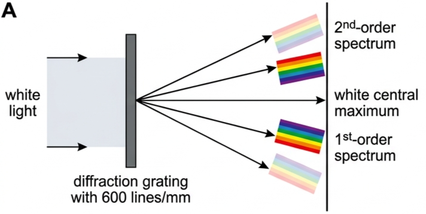
📐 Path difference and the multiple-slit equations
Take any two adjacent slits, separation \(d\), and look at the two rays leaving at the same angle \(\theta\). The lower ray travels an extra distance — the path difference — which comes straight out of the right-angled triangle in Fig 2.
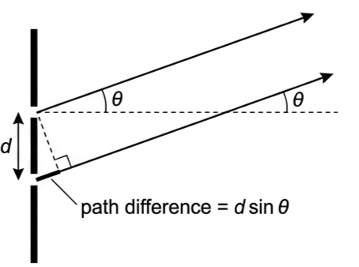
Because the waves interfere constructively, that path difference must also equal a whole number, \(n\), of wavelengths:
In other words, constructive interference occurs at the angles whose sines equal \(\lambda/d\), \(2\lambda/d\), \(3\lambda/d\), \(4\lambda/d\) … and so on.
For \(n = 1\) and small angles, \(\sin\theta \approx \theta = s/D\), so:
which is exactly the fringe-spacing equation already used for two slits.
Destructive interference occurs at angles such that:
These equations can be used with any number of slits. The most common application is the very large number of slits of a diffraction grating. In those arrangements the angles are typically large enough that \(\sin\theta\) must be used, not \(\theta\) in radians.
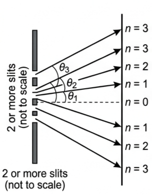
🔬 The effect of having more slits
The number of slits does not change the directions of the maxima, so what is gained by using more of them? The fringes certainly become brighter / more intense. But there is a second, more important reason: the intensity peaks become sharper — more precisely located.
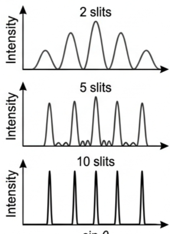
Multiple slits: by increasing the number of parallel slits (of the same width) on which a light beam is incident, it is possible to improve the resolution of the fringes / spectra formed. This effect is used particularly in diffraction gratings.
🧭 Diffraction gratings
A diffraction grating is a very large number of parallel slits, very close together, used to disperse and analyse light. A typical grating has 600 parallel slits every millimetre — usually written as 600 lines/mm.
That separation is equivalent to only about three average wavelengths of light, and is much smaller than the width of the slits discussed so far.
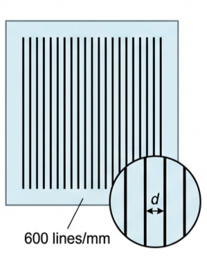
A very small \(d\) results in large values of \(\sin\theta\) (consider \(n\lambda = d\sin\theta\)). If the incident light is also spread over a large number of lines, the intensity peaks are well separated, intense and sharp compared with those from double slits.
Continuous white light spectrum. White light sent through a grating has its different wavelengths / colours sent in slightly different directions, so the light is dispersed into spectra (Fig 1). We refer to the order of a spectrum: all wavelengths / colours with \(n = 1\) form the first-order spectrum, all those with \(n = 2\) the second-order spectrum, and so on. Different orders correspond to different values of \(n\) in \(n\lambda = d\sin\theta\).
Line spectra. If atoms of a particular element, or some compounds, are given enough energy they emit light as a line spectrum — a spectrum of separate lines rather than a continuous spectrum, each line corresponding to a discrete wavelength and energy. (This is discussed in much more detail in Topic E.1; a full understanding is not expected here.) Because gratings have very large numbers of lines very close together, they are excellent at producing intense line spectra with high resolution.
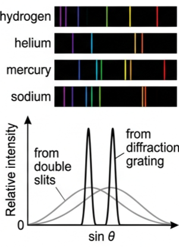
🌊 Modulation by single-slit diffraction
Syllabus content: the single-slit pattern modulates the double-slit interference pattern.
Everything so far has ignored one important factor: the single-slit diffraction pattern produced by the interference of secondary wavefronts within each and every slit. (We assume all slits are identical.) A full superposition analysis of all the wavefronts gives this conclusion:
Modulation means changing the amplitude (or frequency) of a wave according to variations in a secondary effect. Note that \(d\) must always be larger than \(b\), so the spacing of the interference pattern is always smaller than the spacing of the diffraction pattern from each slit. The shape and spacing of the single-slit pattern act as a guiding envelope for the size of the interference peaks.
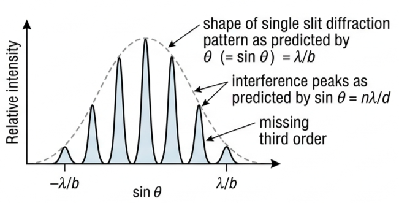
This modulation can result in some orders being suppressed or missing — the third order in Fig 7, and the fourth and fifth orders in Fig 8.
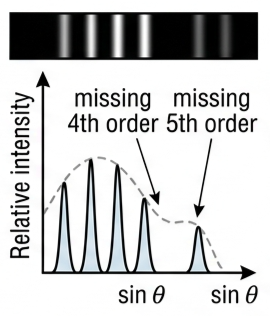
📈 Graphs every examiner uses
| Graph type | Axes (X, Y) | Shape | What to read |
|---|---|---|---|
| Multiple-slit interference | X: \(\sin\theta\); Y: intensity | Evenly spaced peaks at \(\sin\theta = 0,\ \lambda/d,\ 2\lambda/d,\dots\) | Peak spacing along the axis gives \(\lambda/d\); the order number \(n\) labels each peak |
| Effect of N slits | X: \(\sin\theta\); Y: intensity, for 2, 5, 10 slits | Same peak positions; peaks narrower and taller as N rises | More slits → sharper, more intense, better-resolved maxima; positions unchanged |
| Double slits vs grating | X: \(\sin\theta\); Y: relative intensity | Broad humps (2 slits) against tall narrow spikes (grating) at the same \(n\) | The grating gives well separated, intense, sharp peaks — hence high resolution |
| Modulated pattern | X: \(\sin\theta\); Y: relative intensity | Interference peaks inside a single-slit envelope with zeros at \(\pm\lambda/b\) | Envelope width gives \(\lambda/b\) (slit width \(b\)); peak spacing gives \(\lambda/d\); spot the missing orders |
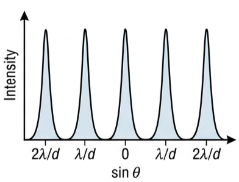
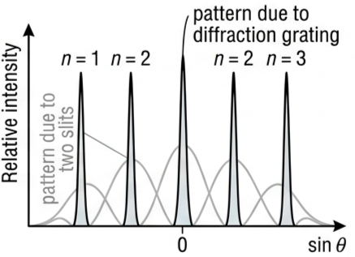
✍️ Worked example C3.6 – finding the wavelength of a green laser
Green laser light passes through a few parallel slits of spacing 0.059 mm. An interference pattern like Fig 9 is seen on a screen 3.12 m from the slits. The distance from the centre of the pattern to the centre of the third fringe is 8.42 cm. Find (a) \(\tan\theta_3\) and \(\sin\theta_3\), (b) the angle in degrees and in radians, (c) the wavelength.
\(D = 3.12\ \text{m} = 312\ \text{cm}\)
\(s = 8.42\ \text{cm}\), \(n = 3\)
\(= 0.0270\)
The sine of the same angle \(= 0.0270\) (same as tan).
In degrees, \(\theta_3 = 1.55^\circ\); in radians, \(\theta_3 = 0.0270\) — the same value as both tan and sin, because the angle is small.
\(3\lambda = (0.059\times10^{-3})(0.0270)\)
\(\lambda = 5.3\times10^{-7}\ \text{m}\)
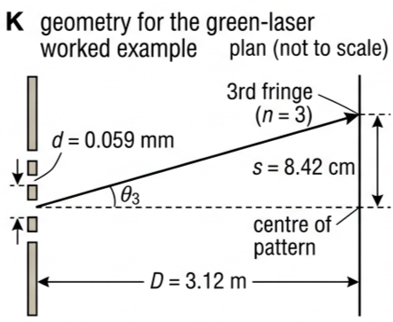
✍️ Worked example C3.7 – how many orders can a grating show?
Using the grating above (600 lines/mm, \(d = 1.67\times10^{-6}\ \text{m}\)), calculate the angles in degrees for the first, second and third peaks from the centre, for light of wavelength 594 nm \((5.94\times10^{-7}\ \text{m})\).
\(\lambda = 5.94\times10^{-7}\ \text{m}\)
\(\sin\theta = \frac{5.94\times10^{-7}}{1.67\times10^{-6}} = 0.3557\)
\(\theta = 20.8^\circ\)
For \(n = 2\), \(\sin\theta = 2\times0.3557 = 0.7114\)
\(\theta = 45.3^\circ\)
For \(n = 3\), \(\sin\theta = 3\times0.3557 = 1.067\)
\(\sin\theta > 1\), which is not possible.
🔭 Real-world: reading the light of a star
Gratings in spectrometers spread starlight, flame emissions and laser output into orders whose angles can be measured to four figures, so an unknown wavelength follows from \(\lambda = d\sin\theta / n\) alone. The same high resolution separates line spectra that a double slit would blur into one band, which is how elements are identified from their emission lines.
🚀 HL Extension – missing orders
An order \(n\) vanishes when its interference maximum lands exactly on a single-slit diffraction minimum: \(n\lambda/d = m\lambda/b\), i.e. when \(d/b = n/m\). For \(d = 3b\), every third order is missing — which is the case drawn in Fig 7.
Challenge: for which ratio \(d/b\) are the fourth and fifth orders both suppressed, as in Fig 8? (Answer: no single small integer ratio removes both — Fig 8 shows a case where the envelope is narrow enough that orders 4 and 5 fall at and beyond the first envelope zero, i.e. \(d/b \approx 4\) with the fifth order buried in the near-zero envelope.)
⚠️ Trap corner – common mistakes
| Misconception | Correct view |
|---|---|
| Mixing up \(\theta = \lambda/b\) and \(\sin\theta = n\lambda/d\) | \(\theta = \lambda/b\) predicts the small angle for which diffraction at a single slit, of width \(b\), produces an intensity minimum. \(\sin\theta = n\lambda/d\) predicts the angles at which interference of light from two or more slits, of separation \(d\), produces intensity maxima. |
| More slits move the maxima | The angles depend on \(d\) only. More slits make the peaks sharper and brighter, not differently placed. |
| Using \(\theta\) in radians for a grating | Grating angles are large, so \(\sin\theta\) must be used. The small-angle form \(s = \lambda D/d\) applies only when \(\theta\) is small. |
| Every order predicted by \(n\lambda = d\sin\theta\) is visible | An order is impossible if it needs \(\sin\theta > 1\), and can also be missing when single-slit diffraction modulates the pattern to zero there. |
| Forgetting that \(d > b\) | Slit separation always exceeds slit width, so the interference fringes are always more closely spaced than the diffraction envelope. |
Complete the statements:
✓ \(\sin\theta = \frac{3\times460\times10^{-9}}{5.0\times10^{-6}}\)
\(= 0.276\)
✓ \(\theta = 16^\circ\) to the normal
✓ \(\theta = 13.9^\circ\), so \(\sin\theta = 0.240\)
✓ \(d = \frac{2\lambda}{\sin\theta} = \frac{2\times6.3\times10^{-7}}{0.240}\)
\(= 5.3\times10^{-6}\ \text{m}\)
✓ lines per mm \(= \frac{1\times10^{-3}}{5.3\times10^{-6}} \approx 190\)
✓ \(n=1\): \(\sin\theta_1 = 0.398\), \(\theta_1 = 23.4^\circ\)
\(s_1 = 1.82\tan\theta_1 = 0.79\ \text{m}\)
✓ \(n=2\): \(\sin\theta_2 = 0.795\), \(\theta_2 = 52.6^\circ\)
\(s_2 = 1.82\tan\theta_2 = 2.39\ \text{m}\)
✓ separation \(= 2.39 - 0.79 = 1.6\ \text{m}\)
(Note the small-angle formula must not be used here.)
✓ At a grating the angle is set by \(\sin\theta = n\lambda/d\), so \(\theta\) increases with wavelength.
✓ Red has the longer wavelength, so it is sent to the larger angle — the order of the colours is reversed compared with a prism.
✓ Overlap occurs where \(2\lambda_{\text{red}} \approx 3\lambda_{\text{blue}}\).
✓ With \(\lambda_{\text{red}} \approx 700\ \text{nm}\) and \(\lambda_{\text{blue}} \approx 450\ \text{nm}\): \(2\times700 = 1400\ \text{nm}\) and \(3\times450 = 1350\ \text{nm}\) — nearly equal, so the two are sent to almost the same angle and the spectra overlap.
✓ Tall, narrow, evenly spaced peaks at \(\sin\theta = 0,\ \pm0.272,\ \pm0.544,\ \pm0.816\) — orders \(n = 0, 1, 2, 3\) each side.
✓ No \(n = 4\) peak, since that needs \(\sin\theta = 1.088 > 1\). Peak heights fall away from the centre because of the single-slit envelope.
✓ \(\sin 7.59^\circ = 0.1321\); second order \(\sin\theta = 0.2642\), \(\theta = 15.32^\circ\)
✓ separation \(= 15.32 - 15.05 = 0.27^\circ\)
✓ About twice the first-order separation of 0.13°, so the lines may now be resolved.
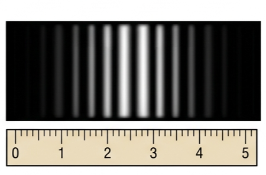
✓ \(\lambda = \frac{sd}{D} = \frac{3.0\times10^{-3}\times0.64\times10^{-3}}{3.40}\)
\(= 5.6\times10^{-7}\ \text{m}\)
(b) ✓ The fringes fade where the single-slit envelope reaches its first minimum. If the pattern dies away about 8 fringes from the centre, \(b \approx d/8 \approx 0.08\ \text{mm}\).
(c) ✓ The maxima stay at the same positions, because they depend on \(d\), not on the number of slits.
✓ They become sharper, narrower and more intense — better resolution — with darker gaps between them.